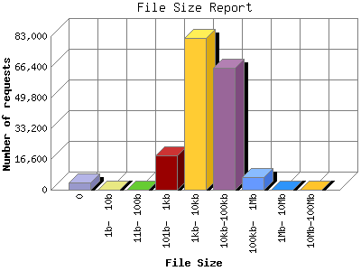

The File Size Report categorizes the size of the file being requested. This can be useful in optimizing site performance. (Remember that on a 28.8Kps modem, it will take on average of 40 seconds to download 100Kb of data.)

| File Size | Number of requests | Percentage of the bytes | |
|---|---|---|---|
| 1. | 0 | 3,854 | 0.00% |
| 2. | 1b- 10b | 0 | 0.00% |
| 3. | 11b- 100b | 26 | 0.00% |
| 4. | 101b- 1kb | 18,439 | 0.27% |
| 5. | 1kb- 10kb | 82,057 | 12.59% |
| 6. | 10kb-100kb | 66,042 | 48.52% |
| 7. | 100kb- 1Mb | 7,043 | 34.62% |
| 8. | 1Mb- 10Mb | 6 | 0.76% |
| 9. | 10Mb-100Mb | 4 | 3.24% |
This report was generated on April 23, 2011 21:02.
Report time frame January 4, 2009 02:40 to April 23, 2011 23:20.
| Web statistics report produced by: analog 5.1 / Report Magic 2.21 |